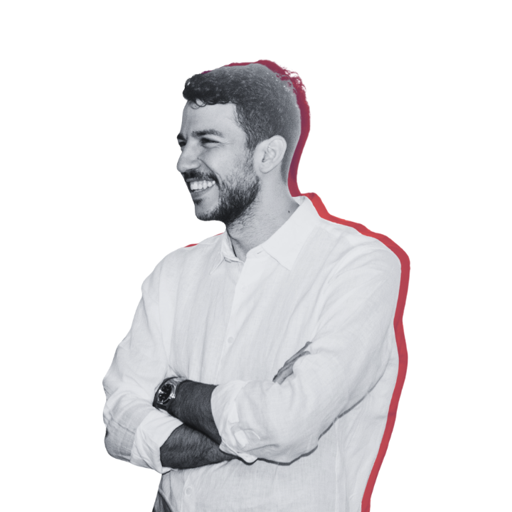

1
Dépenses maîtrisées
Dégage un excédent de cash chaque mois.
Reprenez le contrôle de votre argent et construisez un patrimoine sur le long terme

10 000 Dhs sur un compte courant depuis 10 ans ? Avec une inflation moyenne de 5%/an, ce montant ne vaut plus aujourd'hui que l'équivalent d'environ 6 100 Dhs en pouvoir d'achat réel. Tu n'as rien dépensé — et pourtant tu as perdu près de 4 000 Dhs.
Un ami te partage une action « qui va exploser » sur WhatsApp. Tu achètes sans comprendre l'entreprise. Trois mois plus tard, tu as perdu 15% et tu ne sais même pas pourquoi tu y avais cru.
Personne autour de toi ne parle sérieusement d'investissement. Pas de famille, pas d'amis avec qui challenger une idée ou juste poser une question sans te sentir jugé. Tu gardes tes doutes pour toi, et tu laisses l'émotion décider à ta place.
Alors, par où commencer ?
En réalité, construire un patrimoine à long terme repose sur 3 étapes tellement simples, pourtant peu de gens les exécutent.
Dégage un excédent de cash chaque mois.
Des entreprises de qualité, à bon prix.
Laisse la magie opérer.
Commence par les bases. Cette vidéo t'explique simplement comment fonctionne l'investissement, sans jargon et sans prise de tête.
Rejoins Moroccan Value Investors (MVI), la communauté qui t'aide à structurer ta réflexion et à analyser les entreprises comme un investisseur discipliné.
Passe en 90 jours de débutant perdu à investisseur discipliné, capable d'analyser et de décider seul.
Tu veux commencer à investir sans raccourcis, sans hype, sans spéculation ? MVI est la communauté pour les Marocains qui veulent construire une vraie richesse, de manière simple et patiente. L'objectif est d'investir sur le long terme, avec discipline, en t'appuyant sur des principes solides et une bonne compréhension des entreprises.
Nous avons créé MVI parce qu'investir au Maroc peut être une expérience solitaire. Les bonnes discussions sont rares et dispersées entre des groupes WhatsApp, des cafés ou quelques échanges sur LinkedIn. Les voix les plus visibles sont souvent celles qui promettent des gains rapides ou suivent les tendances. Pendant ce temps, ceux qui veulent construire sérieusement sur le long terme n'ont pas vraiment d'endroit pour apprendre ensemble et avancer.
Oui, absolument. MVI est conçu pour toi même si tu pars de zéro. La formation disponible dès le Jour 1 t'accompagne étape par étape : comprendre les marchés, lire un bilan financier, analyser une entreprise. Tu n'as besoin d'aucune base préalable.
Dès ton inscription, tu accèdes à l'intégralité de la formation en ligne sur le value investing et l'analyse fondamentale adaptée au Maroc. Tu rejoins aussi la communauté de membres, les sessions de questions-réponses en live, les analyses d'entreprises cotées à la BVC, et les événements et rencontres organisés par MVI.
Non. C'est un abonnement mensuel sans engagement. Tu peux annuler à tout moment. Notre conviction : si tu vois la valeur, tu resteras. Le contenu de formation est disponible intégralement dès le premier mois.
Non. MVI est une communauté d'apprentissage, pas un fonds d'investissement. Tu peux rejoindre et apprendre à analyser des entreprises bien avant de placer le moindre dirham. Ce qui compte, c'est ta curiosité et ta volonté de progresser.
Rejoins 100+ Marocains qui construisent leur richesse avec patience et discipline.
Rejoindre MVI →Tu as des questions ? Écris-nous sur WhatsApp
Abonnement mensuel · Sans engagement · Accès immédiat
La richesse ne se construit pas en quelques mois, mais sur plusieurs années. Elle demande de la patience, de la discipline et de la constance. Le plus difficile n'est pas de savoir quoi faire, mais de rester sur le bon chemin dans la durée. MVI est là pour t'aider à tenir dans le temps.
Notre symbole est le cèdre de l'Atlas. Il pousse lentement, vit très longtemps et résiste aux tempêtes. Il représente ce que nous voulons construire : une richesse solide et durable.
⚠️ Disclaimer : Le contenu est purement éducatif et en aucun cas du conseil financier.